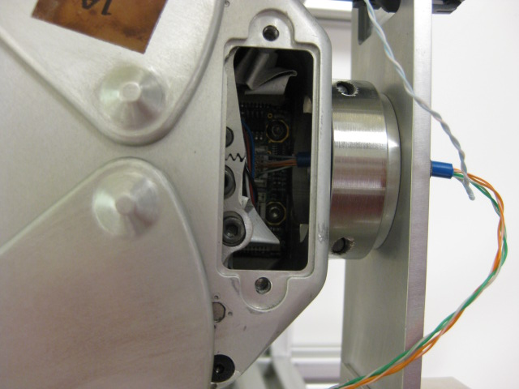
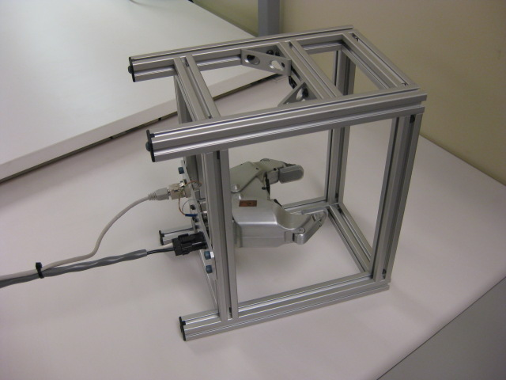

This test should only be run on grippers with no fingertips. If the gripper has sensors, click "Cancel" and select "Gripper Test" from the menu. All new grippers must be qualified with the "Gripper Test", with tips.
Make sure the gripper is fully secured in the gripper test fixture. Plug the cable from the test fixture into the small plug on the gripper board, through the back of the gripper.
Now hook up the power and ethercat cables from the qualification system into the test fixture.
Do not interfere with the gripper when it is calibrating, as it may cause the gripper to set its zero position early. Once the gripper fully closes, move it around and watch the visualizer.
The only time you should touch the gripper is while the visualizer is open, and after the gripper is closed. Touching the gripper may cause it to fail it's test.
Press 'Continue' to proceed.